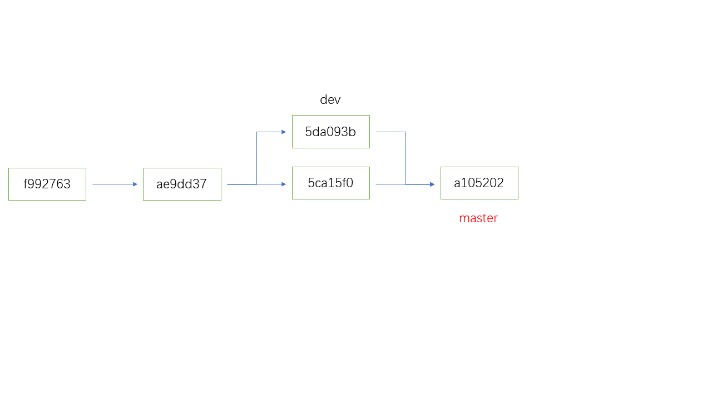

Git
Git 是目前使用最广泛的版本控制系统之一。OI Wiki 也使用了 Git 作为版本控制系统。
安装¶
参见 Git - Downloads。
配置¶
Git 根据配置文件的应用范围，将配置文件分为不同的等级，其中较常用的有两个级别1：
- 适用于当前用户的全局配置文件，该用户操作本系统上的所有仓库时都会查询该配置文件。
- 适用于当前仓库的配置文件。
当多个配置文件对同一个选项作出设置的时候，局部设置会自动覆盖全局设置。因此如果需要在某个仓库应用特定的设置的话，只需更改该仓库下的特定设置即可，不会对全局设置造成影响。
修改配置文件需要用到 git config 命令。
设置用户信息¶
安装 Git 后，第一件事情就是设置你的用户名和邮箱。这些信息在每次提交时都会用到。
| Bash | |
|---|---|
1 2 | |
Note
这里给出的用户名和邮箱仅供演示。您在根据本页面的内容配置时，请记得将这里的用户名和邮箱改成自己的信息。
这里的 --global 表示修改的是全局配置，即该设置对当前用户下的所有仓库均有效。如果不添加 --global 选项，则会默认修改当前仓库下的配置文件。
如果想要修改某个仓库的特定设置，只需在该仓库下执行不带 --global 的命令即可。
配置编辑器¶
| Bash | |
|---|---|
1 | |
在 Windows 下，Git 的默认编辑器可以在安装 Git 时选择（见前文）。之后若要修改，在 Git Bash 里输入如上命令，将编辑器名换成编辑器的绝对路径，运行命令即可。
显示配置¶
可以通过 git config -l 列出当前已经设置的所有配置参数。使用 git config --global -l 可以列出所有全局配置。
仓库操作基础¶
新建 Git 仓库¶
新建一个 Git 仓库非常简单，只需在想要建立仓库的文件夹输入如下命令：
| Bash | |
|---|---|
1 | |
Git 将在当前文件夹新建一个 .git 文件夹，一个仓库就这样建好了。
如果想把一个仓库克隆到自己的电脑上（比如将 OI Wiki 的代码拷贝到本地上进行编辑），采用 git clone 命令即可。
| Bash | |
|---|---|
1 | |
远程仓库的链接
这里给出的仓库链接是 HTTP(S) 链接，也即我们采用了 HTTP(S) 方式连接到远程仓库。
事实上，连接到远程仓库的方式还有多种。其中使用 ssh 连接到远程仓库的方法更为方便和安全，在「远程仓库的管理」部分我们会简单介绍使用 ssh 连接到远程仓库的方法。
这样，被克隆的仓库的内容就会被储存到当前文件夹下一个与仓库同名的新文件夹。在本例中，当前文件夹下会出现一个名为 OI-wiki 的新文件夹。
跟踪文件¶
在对仓库的文件做出了一些更改后，这些更改需要被纳入到版本管理当中去。
使用 git status 命令可以查看当前仓库文件的状态。
举个例子，在一个空仓库中新增了一个 README.md 文件后，执行 git status 命令的效果如下：
| Bash | |
|---|---|
1 2 3 4 5 6 7 8 9 10 11 | |
这里的 Untracked files 指的是 Git 之前没有纳入版本跟踪的文件。如果文件没有纳入版本跟踪，对该文件的更改不会被 Git 记录。
执行 git add <文件> 命令可以将指定的文件纳入到版本跟踪中。
| Bash | |
|---|---|
1 2 3 4 5 6 7 8 9 10 | |
这时 README.md 已经纳入了版本跟踪，放入了暂存区。接下来只需执行 git commit 命令就可以提交这次更改了。
但在进行这一工作之前，让我们先对 README.md 做点小更改。
| Bash | |
|---|---|
1 2 3 4 5 6 7 8 9 10 11 12 13 14 15 16 | |
你会发现 README.md 同时处于暂存区和非暂存区。实际上，是否处于暂存区是对于更改而言的，而不是对于文件而言的，所以对 README.md 的前一次更改已被纳入暂存区，而后一次更改还没有。如果这时候执行 git commit 命令，只有处于暂存区的更改会被提交，而非暂存区的更改，则不会被提交。
Git 给了一条提示，执行 git add README.md 就可以将非暂存区的更改放入暂存区了。
一次性将所有更改放入暂存区
git add 命令会将对指定的文件的更改放入暂存区中。
在多数情况下，用户更期望一次性将所有更改都放入暂存区中，这时候可以应用 git add -A 命令。该命令会将所有更改（包括未被纳入版本跟踪的文件，不包括被忽略的文件）放入暂存区。
如果只需更新已被纳入版本跟踪的文件，而不将未纳入版本跟踪的文件加入暂存区，可以使用 git add -u。
忽略文件
有些时候我们并不希望将一些文件（如可执行文件等）纳入到版本跟踪中。这时候可以在仓库根目录下创建 .gitignore 文件，在该文件里写下想要忽略的文件。Git 将不会将这些文件纳入到版本跟踪中。
例如，*.exe 将自动忽略仓库里的所有扩展名为 .exe 的文件。
现在将非暂存区的文件加入暂存区，将所有更改一并提交（commit）。
| Bash | |
|---|---|
1 2 3 4 5 | |
现在重点观察一下这一次 commit 的信息。
master 表示当前位于 master 分支（关于分支的问题，下文将会详细介绍），b13c84e 表示本次提交的 SHA-1 校验和的前几位，后面则是本次提交的信息。
需要特别关注的是这里的 SHA-1 校验码，每个校验码都与某个时刻仓库的一个快照相对应。利用这一特性我们可以访问历史某个时刻的仓库快照，并在该快照上进行更改。
接下来两行则详细说明了本次更新涉及的文件更改。
另外，commit 过程中可以利用几个参数来简化提交过程：
-a：在提交前将所有已跟踪的文件的更改放入暂存区。需要注意的是未被跟踪的文件（新创建的文件）不会被自动加入暂存区，需要用git add命令手动添加。-m：该参数后跟提交信息，表示以该提交信息提交本次更改。例如git commit -m "fix: typo"会创建一条标题为fix: typo的 commit。
查看提交记录¶
使用 git log 命令可以查看仓库的提交历史记录。
可以看到，提交历史里记录了每次提交时的 SHA-1 校验和，提交的作者，提交时间和 commit 信息。
| Bash | |
|---|---|
1 2 3 4 5 6 7 8 9 10 11 12 | |
分支管理¶
为什么版本管理中需要分支管理呢？答案主要有两点：
- 直接更改主分支不仅会使历史记录混乱，也可能会造成一些危险的后果。
- 通过分支，我们可以专注于当前的工作。如果我们需要完成两个不同的工作，只需开两个分支即可，两个分支间的工作互不干扰。
在 Git 中，简单来说，分支就是指向某个快照的指针。每次提交时，Git 都会为这次提交创建一个快照，并将当前分支的指针移动到该快照。
另外还有一个 HEAD 指针，它指向当前所在的分支。
切换分支的过程，简单来说就是将 HEAD 指针，从指向当前所在的分支，改为指向另外一个分支。在这一过程中，Git 会自动完成文件的更新，使得切换分支后仓库的状态与目标分支指向的快照一致。
分支的创建¶
利用 git branch 命令可以创建分支，git switch 命令可以切换分支，git switch -c 命令可以创建分支并切换到这个新分支。
| Bash | |
|---|---|
1 2 3 4 5 | |
dev 前面的星号代表该仓库的当前分支为 dev，接下来对这个仓库的更改都将记录在这个分支上。
试着创建一个新文件 aplusb.cpp。
| Bash | |
|---|---|
1 2 3 4 5 6 | |
现在切换回 master 分支，这时候文件夹中没有了 aplusb.cpp，一切都回到了刚刚创建 dev 分支时的状态。这时候可以在 master 分支上继续完成其他的工作。
| Bash | |
|---|---|
1 2 3 4 5 6 | |
下面用一张图来解释刚才的操作过程。

master 分支被标红，表明在这几次操作后，它是当前分支（即 HEAD 指向的位置）。
- 最开始时
master指向ae9dd37这一快照。 - 接下来在
master所在的位置创建了一个新的 dev 分支，该分支一开始和 master 指向相同位置。 - 在
dev分支上作了一些更改（创建了aplusb.cpp），进行了一次提交，本次提交后，dev分支指向5da093b这一快照。 - 切换回
master分支后，因为master分支还指向ae9dd37，还没有创建aplusb.cpp，因此仓库中没有这一文件。 - 接下来在
master分支上进行更改（更新了README.md），进行了一次提交，master分支指向了5ca15f0这一快照。
分支的合并¶
当一个分支上的工作已经完成，就可以将这些工作合并到另外一个分支上去。
还是接着上面这个例子，dev 分支的工作已经完成，通过 git merge 命令可以将该分支合并到当前分支（master）上：
| Bash | |
|---|---|
1 2 3 4 5 | |

这次合并具体是怎么执行的呢？
在合并之前，master 指向 5ca15f0，而 dev 指向 5da093b，这两个状态并不在一条链上。
Git 会找到这两个状态的最近公共祖先（在上图中是 ae9dd37），并对这三个快照进行一次合并。三个快照合并的结果作为一个新的快照，并将当前分支指向这一快照。
合并过程本身也是一次提交，不过与常规提交不同的是，合并提交有不止一个前驱提交，它是多个提交状态合并后的结果。
在合并完成后，dev 分支就完成了它的使命，这时候可以利用下面的命令删除 dev 分支：
| Bash | |
|---|---|
1 | |
不过合并过程并非总是这么顺利，在某些情况下，合并过程可能会出现冲突，这个问题接下来会讲到。
解决合并冲突¶
如果在两个分支中，对同一个文件的同一部分进行了不同的更改，Git 就无法自动合并这两个分支，也就是发生了合并冲突。
接着上面的例子，假如你在合并后的 master 分支的基础上，新开了一个 readme-refactor 分支，准备重写一份自述文件。但因为一些疏忽，你同时更改了 readme-refactor 和 master 分支的自述文件。
刚开始自述文件是这样的：
| Markdown | |
|---|---|
1 2 3 | |
在 readme-refactor 分支下的自述文件是这样的：
| Markdown | |
|---|---|
1 2 3 | |
在 master 分支下的自述文件是这样的：
| Markdown | |
|---|---|
1 2 3 | |
这时候运行 git merge readme-refactor 命令，Git 提示出现了合并冲突。
执行一下 git status 命令，可以查看是哪些文件引发了冲突。
| Bash | |
|---|---|
1 2 3 4 5 6 7 8 9 10 11 | |
如何解决冲突？对于每个发生了合并冲突的文件，Git 都会在这些文件中加入标准的冲突解决标记。比如这个例子中的 README.md 文件，打开后它长这个样子：
| Markdown | |
|---|---|
1 2 3 4 5 6 7 | |
====== 作为分界线将两个分支的内容隔开，<<<<<< HEAD 标记和 ====== 之间的部分是 HEAD 指针（master 分支）的内容，而 ====== 和 >>>>>> readme-refactor 标记之间的部分是 readme-refactor 分支的内容。
通过编辑文本来处理冲突，删除这些冲突标记，保存文件，将这些文件纳入暂存区后提交，就可以解决合并冲突了。
| Bash | |
|---|---|
1 2 3 | |
其他合并方式¶
默认情况下，Git 采用 Merge（合并）的方式合并两个分支。使用该方法将分支 B 并入分支 A 时，会将 B 分支的所有 commit 并入 A 分支的提交历史中。
除此以外，Git 还提供了两种合并分支的方式：Squash（压缩）和 Rebase（变基）。
Squash（压缩）¶
使用 Squash 方式将分支 B 并入分支 A 时，在 B 分支上的所有更改会被合并为一次 commit 提交到 A 分支。
在 git merge 中加入 --squash 参数即可使用 Squash 方式进行分支合并。
| Bash | |
|---|---|
1 | |
需要注意的是，在执行上述命令后，Git 只会将 B 分支的所有更改存入 A 分支的缓冲区内，接下来还需要执行一次 git commit 命令完成合并工作。
使用 Squash 方式合并可以简化 commit 记录，但是会丢失具体到每一次 commit 的信息（每次 commit 的提交者，每次 commit 的更改等等），只留下合并为一个整体的信息（每次 commit 的提交者会以 "Co-authored-by" 的形式在提交信息中列出）。但如果是在 GitHub 上进行 Squash and Merge，原有的信息都可以在 Pull Request 中查看。
Rebase（变基）¶
使用 Rebase 方式将分支 B 并入分支 A 时，在 B 分支上的每一次 commit 都会单独添加到 A 分支，而不再像 Merge 方式那样创建一个合并 commit 来合并两个分支的内容2。
首先，切换到 B 分支，接下来将 B 分支变基到 A 分支：
| Bash | |
|---|---|
1 2 | |
现在切回到 A 分支，再执行一次 git merge 命令，即可完成将 B 分支的内容合并到 A 分支的工作。
| Bash | |
|---|---|
1 2 | |
使用 Rebase 完成合并可以让提交历史线性化，在适当的场景下正确地使用 Rebase 可以达到比 Merge 更好的效果。但是这样做会改变提交历史，在进行 Rebase 时和 Rebase 后再进行相关合并操作时都会增加出现冲突的可能，如果操作不当可能反而会使提交历史变得杂乱。因此，如果对 Rebase 操作没有充分的了解，不建议使用。
管理远程仓库¶
在本地完成更改后，你可能会需要将这些更改推送到 GitHub 等 Git 仓库托管平台上。托管在这些平台上的仓库就归属于远程仓库的范畴——你可以从这些仓库中获取信息，也可以将你作出的更改推送到远程仓库上。与其他人的协作往往离不开远程仓库，因此学会管理远程仓库很有必要。
远程仓库的查看¶
使用 git remote 命令可以查看当前仓库的远程仓库列表。
如果当前仓库是克隆来的，那么应该会有一个叫做 origin 的远程仓库，它的链接就是克隆时用的链接。
| Bash | |
|---|---|
1 2 | |
如果要查看某个远程仓库的详细信息的话，可以这样操作：
| Bash | |
|---|---|
1 2 3 4 5 6 7 8 9 | |
远程仓库的配置¶
执行 git remote add <name> <url> 命令可以添加一个名字为 name，链接为 url 的远程仓库。
执行 git remote rename <oldname> <newname> 可以将名字为 oldname 的远程仓库改名为 newname。
执行 git remote rm <name> 可以删除名字为 name 的远程仓库。
执行 git remote get-url <name> 可以查看名字为 name 的远程仓库的链接。
执行 git remote set-url <name> <newurl> 可以将名字为 name 的远程仓库的链接更改为 newurl。
从远程仓库获取更改¶
在远程仓库中，其他人可能会推送一些更改，执行 git fetch 命令可以将这些更改获取到本地。
| Bash | |
|---|---|
1 | |
需要注意的是，git fetch 命令只会获取远程仓库的更改，而不会将这些更改合并到本地仓库中。如果需要将这些更改进行合并，可以使用 git pull 命令。在默认情况下，git pull 相当于 git fetch 后 git merge FETCH_HEAD。
| Bash | |
|---|---|
1 | |
将更改推送到远程仓库¶
当你完成了一些更改之后，使用 git push 命令可以将这些更改推送到远程仓库。
| Bash | |
|---|---|
1 | |
根据远程仓库的要求，可能会要求你输入远程仓库账户的用户名和密码。
需要注意的是，你的更改能成功推送，需要满足两个条件：你拥有向这个仓库（分支）的写入权限，且你的这个分支比远程仓库的相应分支新（可以理解为没有人在你进行更改的这段时间进行了推送）。当远程分支有当前分支没有的新更改时，可以执行 git pull 命令完成合并再提交。
如果你需要强制将本地分支的更改推送到远程仓库的话，可以加入 -f 参数。此时 远程仓库的提交历史会被本地的提交历史覆盖，因此该命令应谨慎使用。更好的选择是使用 --force-with-lease 参数，该参数仅在远程仓库没有更新时才会进行覆盖。需要注意的是，此处「更新」是相对于上一次 fetch 而言的，如果使用了 VS Code 提供的 Auto Fetch 功能，可能会没有注意到更新而使 --force-with-lease 和 -f 一样危险。
追踪远程分支¶
通过将一个本地分支设定为追踪远程分支，可以方便地查看本地分支与远程分支的差别，并能简化与远程分支交互时的操作。
在开始追踪前，你需要先执行 git fetch <remote-name> 将远程仓库的信息抓取到本地。
接下来执行 git switch <remote-branch>，会在本地自动创建名字为 <remote-branch> 的新分支，并设定该分支自动追踪相应的远程分支。
Note
需要注意，只有当本地不存在该分支，且恰好只有一个远程分支的名字与该分支匹配时，Git 才会自动创建该分支且设定其追踪相应的远程分支。
这时候执行 git status 命令，会提示当前分支与远程分支之间的差别。
因为设定了本地分支追踪的远程分支，向远程分支推送的命令也被简化了。只需要执行 git push 命令，在本地分支上作出的更改就能被推送至其追踪的远程分支。
对于本地已有的分支，设定其对应的远程追踪分支也很容易。只需在当前分支下执行 git branch -u <remote-name>/<remote-branch>，就可以设定当前的本地分支追踪 <remote-name>/<remote-branch> 这一远程分支。
使用 ssh 连接¶
与 HTTP(S) 相比，使用 ssh 连接到远程仓库更为方便安全。
在使用 ssh 连接到远程仓库之前，需要先在本地添加 ssh 密钥。接下来需要将本地添加的 ssh 密钥的 公钥 上传到远程仓库账户。
考虑到本文主要是给 OI Wiki 的贡献者提供一个使用 Git 的教程，这里直接给出 GitHub Docs 提供的教程，供各位读者参考。
完成以上步骤后，你就可以通过 ssh 连接到远程仓库了。下面就是一条通过 ssh 连接 clone OI Wiki 仓库的命令：
| Bash | |
|---|---|
1 | |
将更改推送至远程仓库的过程与使用 HTTP(S) 连接类似。但使用 ssh 连接可以免去验证远程仓库帐号密码的过程。
Git GUI Tools¶
对于不熟悉命令行的同学，纯命令行的 Git 的上手难度可能会偏高，而借助 GUI 工具可以一定程度上降低 Git 的上手难度。此外，相比于命令行，GUI 工具在查看 diff 以及 log 时在体验上有一定程度的提高。
Git 本身自带有 GUI，市面上也有很多优秀的 Git GUI 工具，例如针对 Windows 用户的 TortoiseGit3，支持 Windows 和 Mac 的 Sourcetree4等。
这里简单介绍一下 TortoiseGit 的使用。下载并安装好 TortoiseGit 之后，在本地仓库的目录下，单击鼠标右键，在右键菜单中就可以看到 Git 的各个功能。

详细的使用方法这里不再赘述，可以参考官网里的使用文档或者通过搜索引擎学习，例如 TortoiseGit Manual。
很多 GUI 工具都有官方中文支持，例如 Git Desktop 以及 TortoiseGit。但是还是会有部分翻译看起来较为变扭，推荐使用英文版本。
外部链接¶
参考资料与注释¶
本页来源：OI-Wiki
-
事实上 Git 还有一个针对系统上每一个用户及系统上所有仓库的通用配置文件，该配置文件覆盖范围最广，等级在用户配置文件之上。因为该配置实践中较少使用，这里不再展开。 ↩
-
Pro Git Book 中提供了可视化的 Rebase 过程图，借助图片读者可以更好地理解 Rebase 的机制。 ↩
本页最近更新：2024/07/12
发现错误？想一起完善？ 即刻编辑此页
本页贡献者：OI-Wiki
本页全部内容在 CC BY-SA 4.0 协议之条款下提供，附加条款亦可能应用